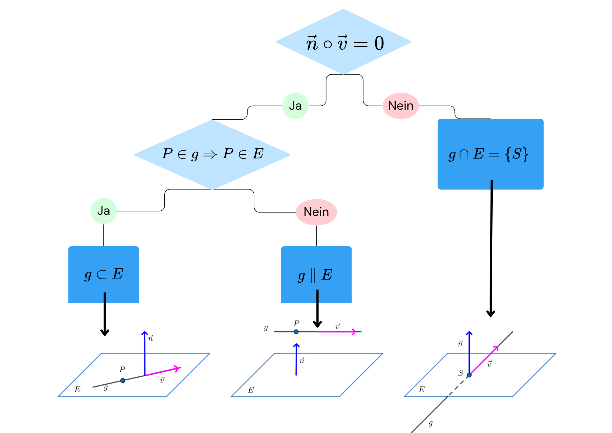

Lagebeziehung Ebene-Gerade
Eine Gerade und eine Ebene können drei unterschiedliche gegenseitige Lagebeziehungen haben:
-
Die Gerade liegt in der Ebene; dann sind alle Punkte der Geraden zugleich Punkte der Ebene.
-
Die Gerade und die Ebene haben genau einen gemeinsamen Punkt (Durchstoßpunkt);
das heißt, die Gerade und die Ebene schneiden sich. -
Die Gerade und die Ebene haben keine gemeinsamen Punkte;
die Gerade ist parallel zur Ebene.
Sei
eine Gerade mit Stützvektor \(\vec{a}\) und Richtungsvektor \(\vec{v}\).
Sei
eine Ebene in Normalenform mit Normalenvektor \(\vec{n}\).
Der Normalenvektor einer Ebene kann unabhängig von der vorliegenden Darstellungsform der Ebenengleichung entweder direkt abgelesen oder rechnerisch bestimmt werden.
Die Lagebeziehung zwischen Gerade und Ebene wird durch den Richtungsvektor \(\vec{v}\) der Geraden und den Normalenvektor \(\vec{n}\) der Ebene festgelegt.
Zur Bestimmung der Lagebeziehung wird das folgende Schema verwendet.

Beispiele zur Lagebeziehung Gerade – Ebene¶
Beispiel: Gerade schneidet die Ebene¶
Gegeben seien die Gerade
und die Ebene
Zunächst wird das Skalarprodukt zwischen Richtungs- und Normalenvektor berechnet:
Die Gerade ist somit nicht parallel zur Ebene und schneidet diese.
Zur Bestimmung des Schnittpunktes wird die Geradengleichung in die Ebenengleichung eingesetzt:
Der Schnittpunkt ist damit:
Beispiel: Gerade liegt in der Ebene¶
Gegeben seien die Gerade
und die Ebene
Zunächst wird das Skalarprodukt berechnet:
Die Gerade ist damit parallel zur Ebene oder liegt in ihr.
Zur Entscheidung wird eine Punktprobe durchgeführt:
Der Stützpunkt der Geraden liegt in der Ebene.
Ergebnis:
Beispiel: Gerade ist parallel zur Ebene¶
Gegeben seien die Gerade
und die Ebene
Berechnung des Skalarprodukts:
Die Gerade ist parallel zur Ebene oder liegt in ihr.
Punktprobe mit dem Stützpunkt der Geraden:
Der Punkt liegt nicht in der Ebene.
Ergebnis: